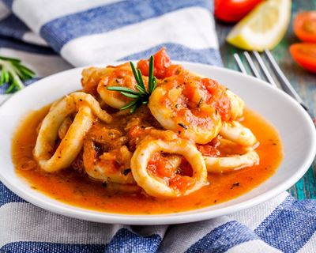
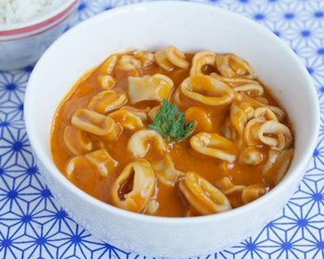
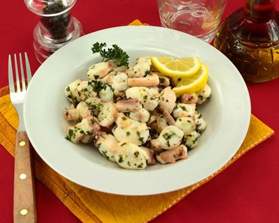
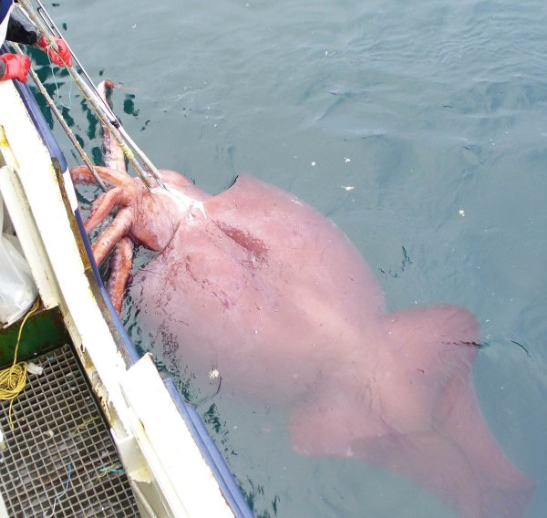
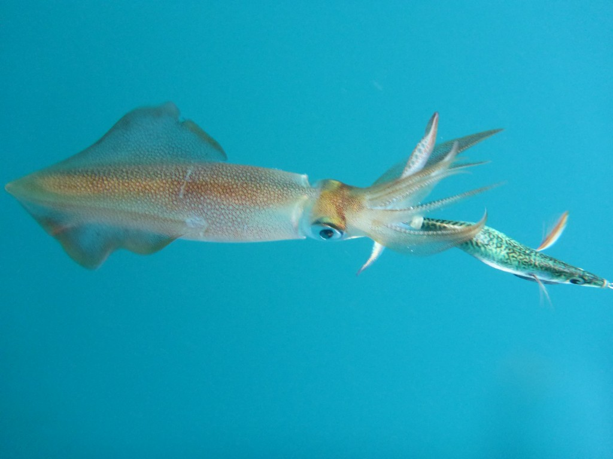
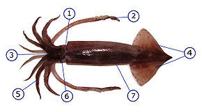
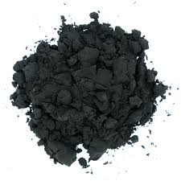

I)La cuisine
Tout d'abord leur particularités la plus importante est le fait que les calamars sont comestibles !! Le nombres de plats qu'on peut faire avec, est incalculable, il y a une infinité de possibilité.
Exemples de recettes:
| Recettes | Description | Liens |
|---|---|---|
| Calamars à l'armoricaine | Une recette qui vous ferras voyager en mer | Clique ici |
| Calamars à la catalane | La meilleur des recettes pour draguer une filles | Clique ici |
| Calamars à l'ail et au vin blanc | La recette qui ferra plaisir à mamie ! | Clique ici |
  
II)Leurs taille & leurs alimentation
La majorité des calamars ne dépassent pas 60 cm de long, mais certains calamars atteignent une taille jusqu'a dix fois supèrieur. Les plus grands calamars vivents dans les abysses des océans.Cependant il existe des calamars géants, qui peuvent mesurer jusqu'a 13 mètres de long (à ce jour le plus grand attrapé). Le premier calamar géant a été attrapé en février 2007, il mesuré 10 mètres de long pour 465 kilos!
 
Tous les calmars sont des prédateurs, à la possible exception des calmars à longs bras. Ils s'attaquent principalement aux poissons, aux crustacés ainsi qu'à d'autres mollusques. Les calmars sont occasionnellement cannibales, les plus grands calmars pouvant s'attaquer aux plus petits
III)Locomotion
Les nageoires, aussi appelées ailettes, contrairement aux autres animaux marins, ne sont pas la principale source de locomotion chez la plupart des espèces de calmar. Elles ne servent généralement que pour les déplacements lents, comme l'approche d'une proie. Pour les déplacements rapides, le calmar utilise un système de propulsion par réaction, en utilisant son manteau (le haut de sa tête) qui laisse entrer de l'eau par des trous.Suite à cela, il contracte son manteau pour faire sortir l'eau à une vitesse fulgurante, ce qui le propulse rapidement.

Le manteau est ici représenté par le numéro 7
IV)Encre
Dans le manteau se trouve une glande qui secrète de la sépia, une encre noirâtre, liquide et dense. Quelques gouttes de cette substance suffisent à troubler l'eau autour du calmar afin de prendre la fuite face à un prédateur. Il fut un moment où les êtres humains utilisés l'encre des calamars pour l'encre des stylos, où encore pour des feutres ou autres outils de colorations.
